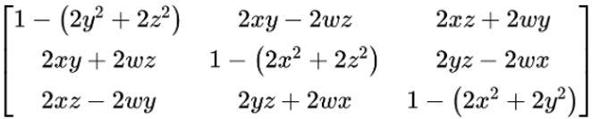
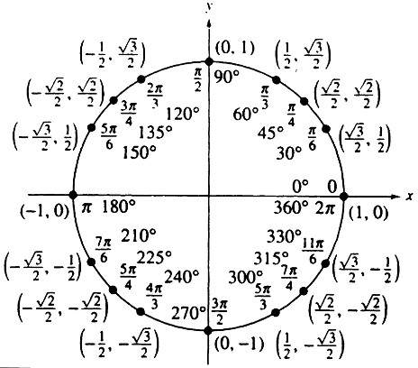
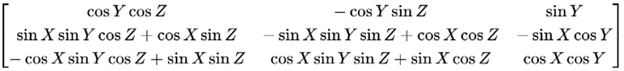

Quaternions to Euler Angles
The conversion from a quaternion to a set of Euler angles has a level of complexity to it due to the inverse trigonometry involved. As shown in the previous section, converting from a set of Euler angles to a quaternion involves the sine and cosine operators. Going back to a set of Euler angles requires the use of the arcsine, arccosine, and arctangent operators, each coming with its own set of limited range values that can be returned. It is for this reason that it is impossible to return certain Euler angles back from a quaternion.
A simple way to look at these conversion methods is by looking at the rotation matrices involved. Constructed from a quaternion, the corresponding rotation matrix, \(M\), looks as follows, given a quaternion \(q = (w, x, y, z)\) with the real part represented as \(w\):
The conversion from a quaternion \(q = (w, x, y, z)\) to a set of Euler angles \((X, Y, Z)\) with the \(XYZ\) rotation is shown by the following equations: \[X=\arctan\Big(\frac{-m_{23}}{m_{33}}\Big)=\arctan\Big(\frac{2xw-2yz}{1-(2x^2+2y^2)}\Big)\] \[Y=\arcsin(m_{13})=\arcsin(2xz+2wy)\] \[Z=\arctan\Big(\frac{-m_{12}}{m_{11}}\Big)=\arctan\Big(\frac{2wz-2xy}{1-(2y^2+2z^2)}\Big)\] These expressions seem trivial in nature, but when looking deeper at the operations and variables that are being used to make these conversions, it becomes evident that the expressions are more complex than they appear.
First off, it is important to note the ranges that the arctangent, arcsine, and arccosine operators return. The sine of \(\frac{\pi}{6}\), which equals the value \(\frac{1}{2}\), is the same as the sine of \(\frac{5\pi}{6}\), but when the arcsine function is taken for \(\frac{1}{2}\), the value that is returned is \(\frac{\pi}{6}\). The value \(\frac{5\pi}{6}\) cannot be returned from this operation. The figure of the unit circle below helps to visualize this idea.
The arcsine function only returns values in the first and fourth quadrants of the unit circle, values in the interval \([-\frac{\pi}{2},\frac{\pi}{2}]\). In the same way, arctangent only returns values in the interval \((-\frac{\pi}{2},\frac{\pi}{2})\), and arcsine only returns values in the interval \([0,\pi]\). Many methods for converting from a quaternion to Euler angles will use a special function known as \(\text{arctan2}(x,y)\), where \(x\) and \(y\) represent the numerator and denominator of the input value respectively. Instead of simply taking the inverse tangent of one value, this function seeks to solve the issue of returning a limited range by returning values based on the signs of \(x\) and \(y\). For example, if \(x\) and \(y\) are both negative, it returns a value from the third quadrant instead of the first. With this function, the expression given above for finding \(X\) from a quaternion can instead be represented as follows: \[X=\text{arctan2}(2xw-2yz,1-(2x^2+2y^2))\] However, even this method has its faults when used in this way. Imagine that the expressions used to find the four quaternion values from a set of Euler angles of the rotation \(XYZ\) were plugged into the above equations going back to a set of Euler angles. The rotation matrix taken from Euler angles \(X\), \(Y\), and \(Z\) of the \(XYZ\) rotation sequence is shown here:
If trying to find Euler angles from the rotation matrix, \(M\), the following formulas are used for the \(XYZ\) rotation sequence: \[X=\text{arctan2}(-m_{23},m_{33})=\text{arctan2}(\sin X\cos Y,\cos X\cos Y)=\arctan\Big(\frac{\sin X\cos Y}{\cos X\cos Y}\Big)\] \[Y=\arcsin(m_{13})=\arcsin(\sin Y)\] \[Z=\text{arctan2}(-m_{12},m_{11})=\text{arctan2}(\cos Y\sin Z,\cos Y\cos Z)=\arctan\Big(\frac{\cos Y\sin Z}{\cos Y\cos Z}\Big)\] This is what would also be found if the expressions used to find the quaternion values from Euler angles were substituted into equations converting back to those Euler angles.
The operations used to get \(X\) and \(Z\) in this case are polluted in a sense. The \(\text{arctan2}\) function specifically is looking to return a value in a specific quadrant of the unit circle based on whether its arguments are negative or positive. However, with the addition of the cosine of \(Y\) in both the numerator and denominator of the \(\text{arctan2}\) function for \(X\), the signs of those arguments could be affected if perhaps the cosine of \(Y\) is negative. So not only are the conversion methods dealing with limited ranges that can be returned, but they are also accounting for additional operations that in any normal expression would get cancelled out but can’t be ignored in the \(\text{arctan2}\) operation. It is for these two reasons that anyone looking for a specific set of Euler angles to be returned out of the conversion methods from a quaternion may find that those angles simply cannot be returned.
There are twelve rotation sequences, and so twelve sets of expressions for converting from a quaternion to Euler angles. Each set will have its own limited ranges and will be polluted in different ways.
Have any feedback? Any issues? Email us at tuconvertplus@gmail.com.